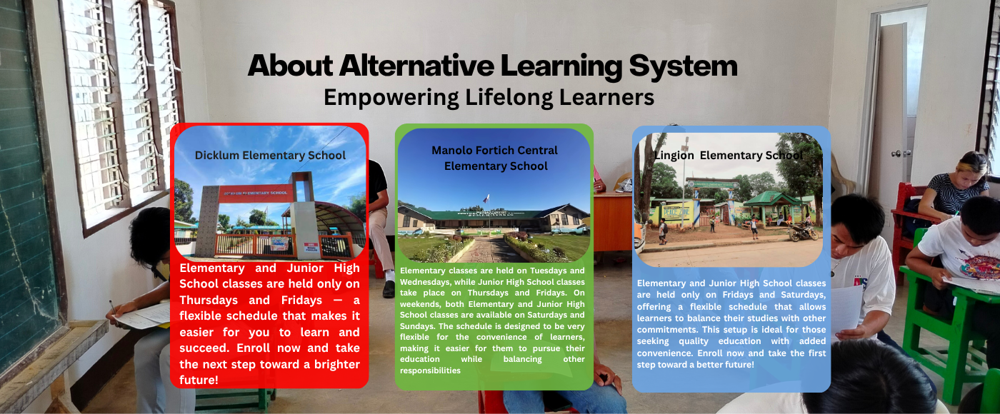

EMPOWERING LIFELONG LEARNERS
#SaALSmaypag-asa
To enroll in the Alternative Learning System (ALS)
This program is designed for individuals who have difficulties with essential literacy skills such as reading, writing, and numeracy. It is intended for those aged 12 and above, aiming to help them improve their abilities and gain better opportunities in education and everyday life.
•12 years old and above
•Not yet graduated from Elementary Level
•Not enrolled in formal school
•Eager to learn and to attend on schedule day.
•16 years old and above
•Not yet graduated from Junior High School
•Not enrolled in formal school
•Eager to learn and to attend on schedule day.
Livelihood skill training for ALS learners involves incorporating vocational and technical skills into the regular curriculum, equipping students with practical abilities to find employment or start their own businesses. ALS-EST, or Alternative Learning System – Education and Skills Training, is a program that integrates this approach, offering a chance for out-of-school youth and adults to gain skills and improve their economic prospects.